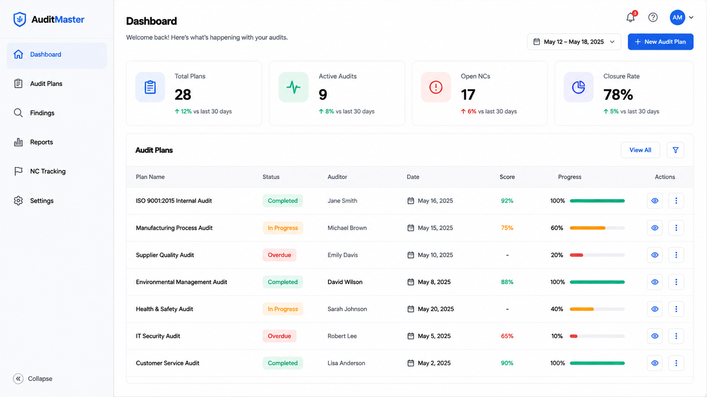
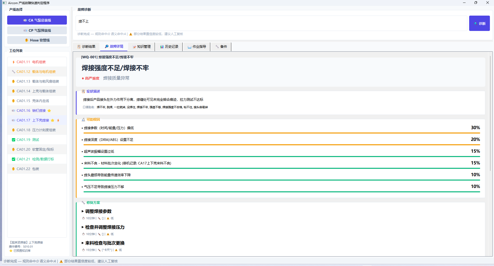
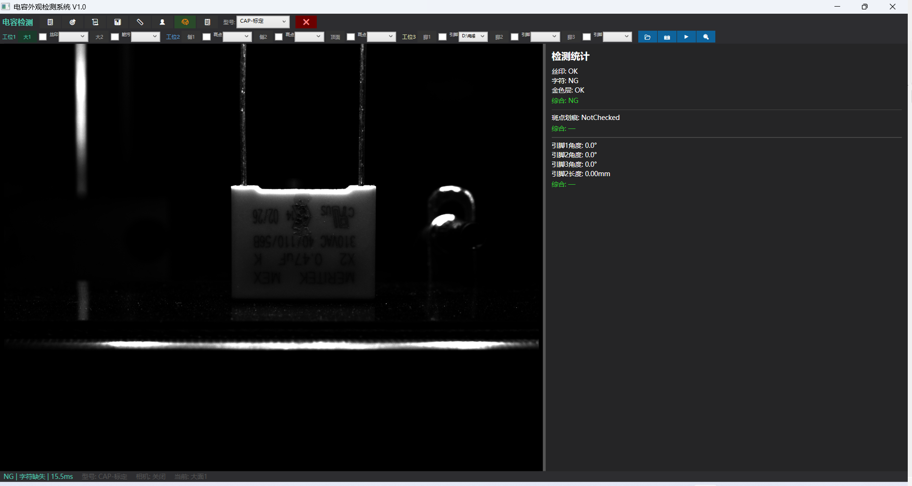
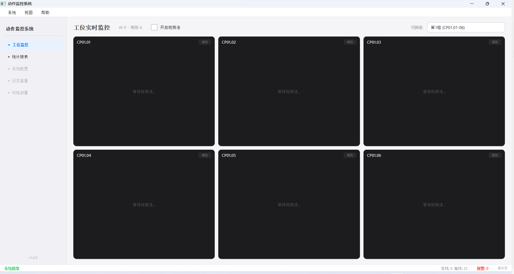
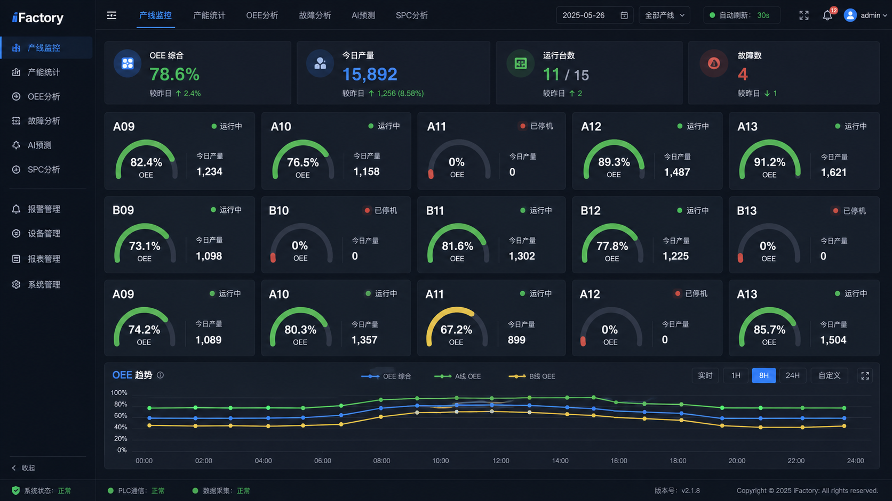
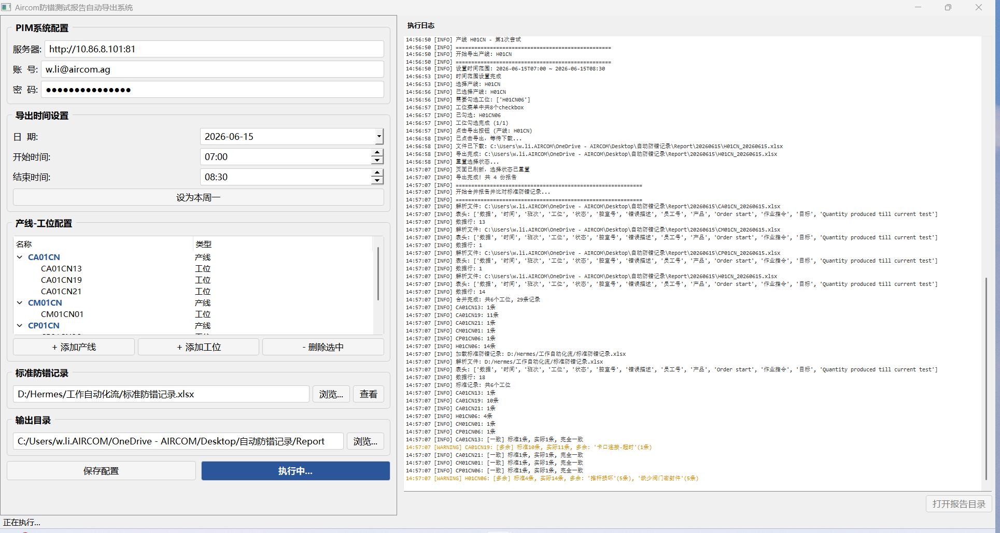
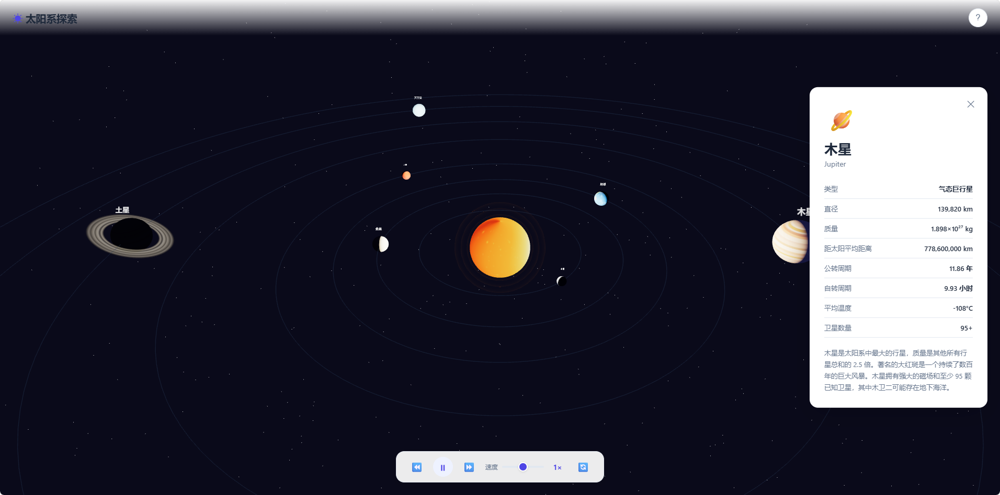

12 张截图
P.01
汽车质量体系审核系统
Automotive Quality Audit Platform
覆盖 IATF 16949 体系审核、VDA 6.3 过程审核、VDA 6.5 产品审核的一体化平台。内置 242 条审核条款库与三套评分引擎，两级审批流，一键生成中英双语 Word 审核报告。
查看系统截图 →工艺 × 自动化 × 代码
ABOUT — 关于我
「产线教我看见问题，
代码给我解决问题的自由。」
我是李汶翰，Aircom 宁波的 IE 工程师，负责 CA / CP / Hose 三条汽车零部件产线的工艺与改善。白天在现场调焊接参数、导自动化线、迎国际审核；工位之外，我把这些真实痛点一个个写成软件——故障判定、视觉检测、审核系统、PLC 监控——让工厂里的经验变成可以复用的工具。
供职于欧企，英语为工作语言，直接对接 Volvo、Audi、Subaru、BMW、Nissan 等主机厂需求端。
IMPACT — 用数据说话
SELECTED WORKS — 自研项目
每一个都源自产线上真实存在的问题，每一个都在真实运行。点击卡片查看系统截图。

12 张截图Automotive Quality Audit Platform
覆盖 IATF 16949 体系审核、VDA 6.3 过程审核、VDA 6.5 产品审核的一体化平台。内置 242 条审核条款库与三套评分引擎，两级审批流，一键生成中英双语 Word 审核报告。
查看系统截图 →
5 张截图Fault Diagnosis Expert System
覆盖 CA / CP / Hose 三条产线全部 30 个工位的故障知识库，jieba 分词 + TF-IDF 检索，现场人员用自然语言描述故障即可秒级定位判定路径，超声焊接工位预置专家级排障方案。
查看系统截图 →
5 张截图Capacitor Visual Inspection
自训练深度学习模型完成电容引脚与外观缺陷检测，PyTorch 训练、ONNX 部署，覆盖大面 / 侧面多视角检测，替代人工目检。
查看系统截图 →
6 张截图Motion Monitoring System
基于视觉识别的作业动作监控，自动识别工位动作序列、统计工时、输出超时报表，为人机工程优化与标准工时制定提供数据支撑。
查看系统截图 →
2 张截图PLC Data Acquisition & Monitor
逆向 ADS 通讯协议直连产线 PLC，实时抓取设备状态与工艺数据，Web 端可视化监控，让隐藏在控制器里的数据变成可分析的资产。
查看系统截图 →
1 张截图Error-proofing Report Automation
Playwright 驱动 Blazor 内部系统，自动完成登录、检索、导出、整理防错测试报告全流程，把每周数小时的重复操作压缩成一次双击。
查看系统截图 →
1 张截图Interactive Solar System
纯 Web 实现的太阳系交互可视化——轨道运动、行星信息、沉浸式浏览。工程师的浪漫，是把宇宙也做成可交互的。
查看截图 →JOURNEY — 成长轨迹
本科 · 卓越工程师计划。主修高分子化学、高分子物理、复合材料、聚合物成型工艺与模具设计；曾任校宣传部副部长，为校园媒体做设计。
动力电池工艺：K-VALVE 不良从 30000 PPM 降至 5000 PPM；负压化成 / 补电 / DCIR 线体 OEE 提升至 72%+；二次注液自动擦拭机构验证导入，优化 4 名人力。
CA / CP / Hose 三线工艺负责人：自动化 Hose 线从零导入节省 12 人力；压缩机线班产 +42%、OEE 86.9%；IATF 16949 连续两年零缺陷；Volvo / Audi / Subaru / Nissan 项目全部零延期导入。
在工程师本职之外持续构建软件能力：7+ 个落地项目横跨全栈、机器视觉、NLP、PLC 通讯与 RPA——让「会写代码的工艺工程师」成为自己的护城河。
CAPABILITIES — 能力矩阵